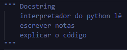

Um comentário é uma parte ou linha do código, na qual você não quer que apareça na execução, mas apenas no arquivo do projeto.
Eles servem na sua maioria para explicar algum código, ou para acrescentar observações.
Os Comentários em Python são interpretados de duas maneiras diferentes:
A tag '#' é para comentar uma linha apenas.
já a tag """ """ ou ''' ''' é chamada de Docstrings, servem para comentar várias linhas. MAS O DOCSTRING NÃO É UM COMENTÁRIO, mas serve também.
Exemplo:
